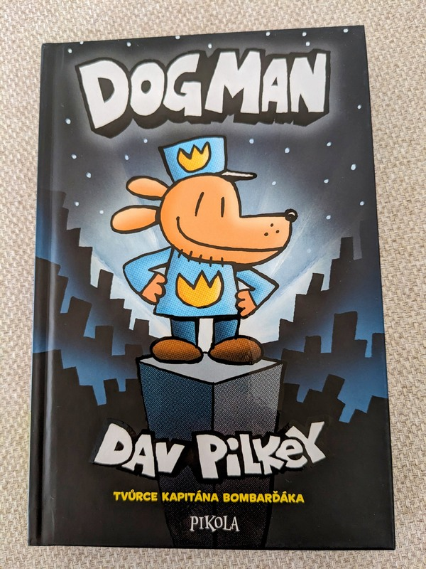

Vzhledem k tomu, že už máme doma malého čtenáře, snažím se vycházet jeho zájmům na poli literárním maximálně vstříc. Před Vánoci v družině zrovna trendovala knižní komiksová série o Dogmanovi, která dokonce inspirovala Oliho k tvorbě vlastních komiksů o dobrodružstvích s jeho nejlepším kamarádem :-D
Snažím se udržovat si o současné literární tvorbě pro děti docela přehled, ale přiznám se, že o Dogmanovi jsem do té doby neslyšela a asi bych po této knize na první dobrou ani nesáhla. Jednak jsem nikdy úplně nepropadla žánru komiksu (tedy pominu-li samozřejmě legendární časopis Čtyřlístek, který jsme s bráchou jako děti zbožňovali) a vlastně mě úplně nezaujala ani vizuální stránka knihy. Děti mají ale samozřejmě jiný vkus a obvykle se jim tyhle prvoplánové kresby prostě líbí víc než propracované a vkusné ilustrace :-)
Pro začínající čtenáře je komiks úplně ideální, protože: málo textu, hodně obrázků, rychlý spád. Děj hezky odsýpá a dítě má pocit, že toho za chvilku přečetlo hrozně moc. Kniha obsahuje 4 samostatné příběhy, jejichž hlavním hrdinou je policejní pes Dogman (kuriozní okolnosti jeho „zrození“ asi nebudu prozrazovat :-D). Zápletky jsou vyhnané do extrému, ale nechybí jim vtip, byť občas rovněž poněkud prvoplánový. Místy se ale ani jako dospělí neubráníte smíchu – můj nejoblíbenější je poslední příběh o vzpouře oživlých párků :-D
Jako bonus dítě v knize najde několik stránek, jejichž listováním může postavičky „rozpohybovat“ a dodat příběhu zase o trochu víc dynamiky, a závěrečná „škola“ pro malé komiksové kreslíře, kde se může čtenář v několika jednoduchých krocích naučit nakreslit své oblíbené knižní hrdiny. Kredit je třeba přiznat i českému překladu, který do děje propašoval i pár vtípků z české kotliny (reportérka Emma Podmáslí). Velmi cením také pojmenování obchodu Zlosyn a syn :-D
Suma sumárum: za mne to asi nebude úplně nejoblíbenější položka naší domácí dětské knihovničky, na druhou stranu mezi dětmi Dogman určitě sklízí zasloužený ohlas a pokud dopomůže další generaci dětí ke čtenářské gramotnosti a lásce ke knihám, rozhodně splnila svůj účel.
